Throw Social
Built at night. Open by morning.
A social-play venue in Washington, DC had screens, lighting, lasers, and a packed opening-season calendar — but no system tying them together and no dark days to build one. So the system was built in the gaps: late-night installs between service, tested against real crowds, and handed a proper front-of-house brain.
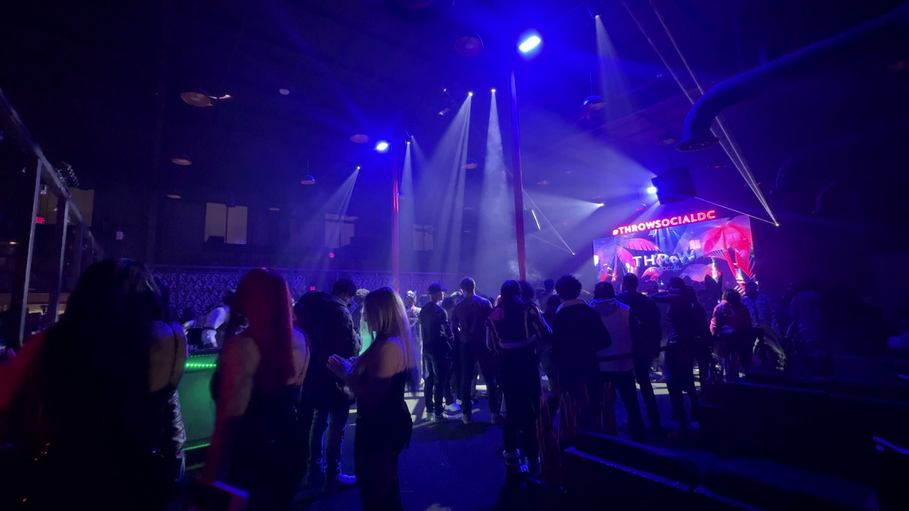
Overview
Three systems that had never met — video walls, Art-Net lighting with lasers, and camera feeds — became one instrument with one operator position.
The venue's screens, lights, and lasers ran as separate islands, and every install window ended at open. The system had to come together across late-night sessions — through New Year's Eve programming — without ever costing a service night.
I built a dedicated control PC for lighting and lasers, put the video system on NDI, installed cameras, finalized the front-of-house position, and wired all of it into Resolume-driven playback — then ran the room as resident VJ, tuning the system against real nights.
A venue that can be played: one position drives video, light, lasers, and live camera. The system survives normal nights, holiday peaks, and staff operation — with ongoing support closing gaps as the room evolves.
Working while the room worked
The first build ran December 26 to January 10 — nightly sessions after close and quick daytime checks, threaded around the venue's biggest week of the year. NYE ran on a half-built system that nobody in the room could tell was half-built.
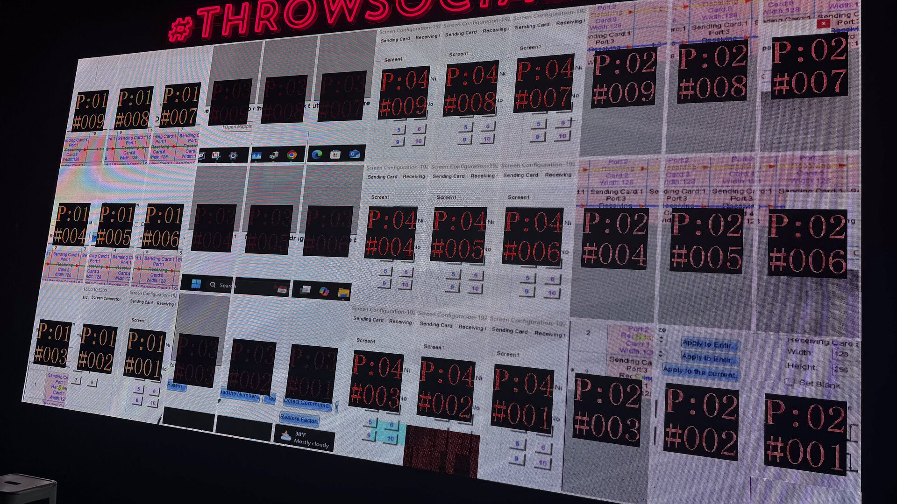
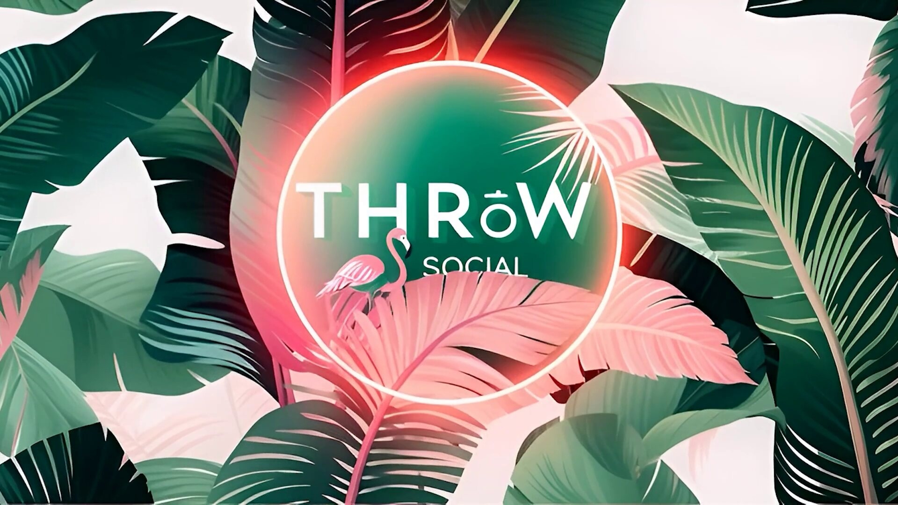
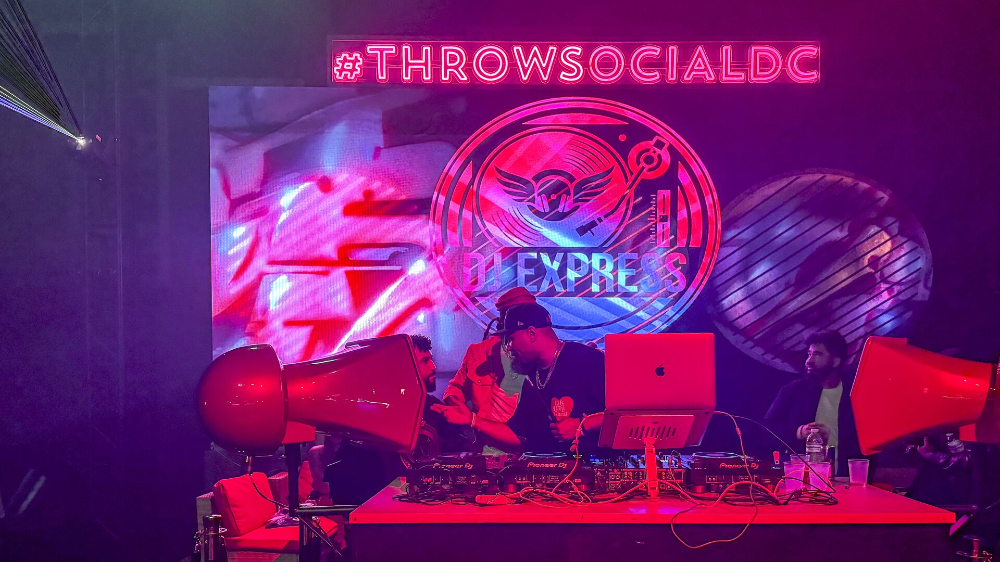
A venue that never goes dark cannot be commissioned the normal way. Every night's work had to end in a room that could open: no half-patched lighting, no dead wall, no cable run left dangerous. The install plan was really a sequence of safe stopping points.
One deck, every surface
Resolume Arena carries the room: content banked by energy, mapped to the venue's screen geometry, with lighting and laser looks triggered in step. The same system serves a quiet Tuesday and a sold-out Saturday.
The room, played
Residency nights are where the system earns its keep — and where its weak points show up first. Every fix from a live night went back into the build.
Kept running, not just delivered
Venue systems decay the moment nobody owns them. This one is owned: network and Art-Net faults traced and fixed, camera chain extended, hardware upgraded as the room's ambitions grew — often in the same late-night windows the install used.
- The control PC is sacred
Lighting and lasers run on dedicated hardware — never on a laptop that leaves the building.
- Every fix is documented
Network maps and settings live with the venue, so the next problem is a lookup, not an investigation.
- Nights end operable
Whatever the session touched, the room opens tomorrow without a call.
One instrument, documented
The curated record of the venue system. Click any frame to view it full size.
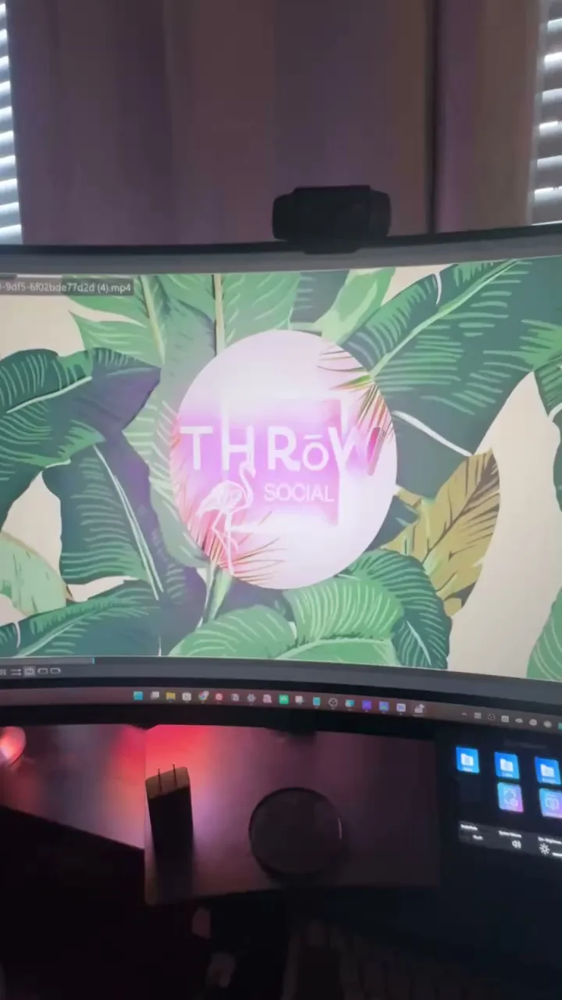
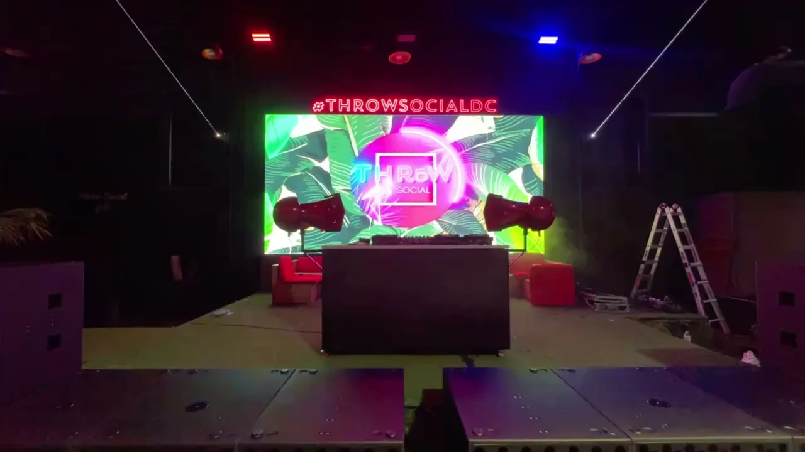
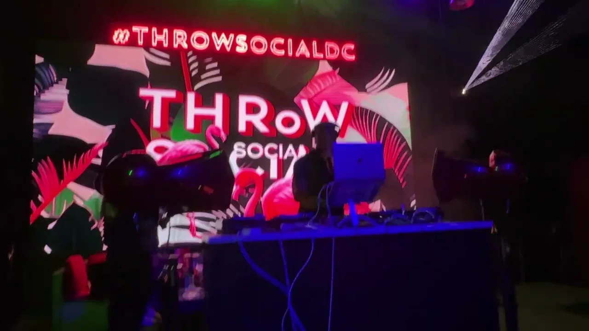
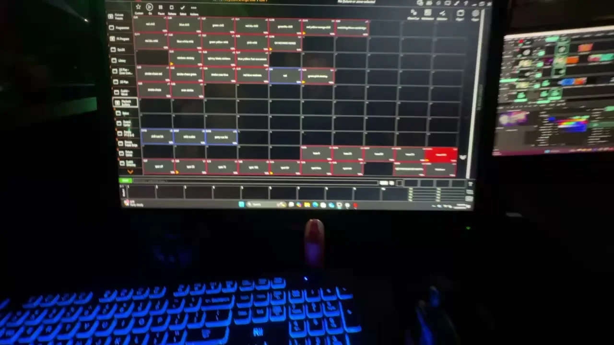
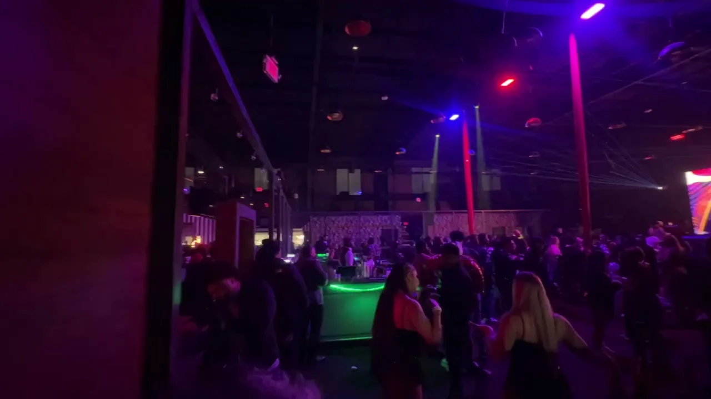
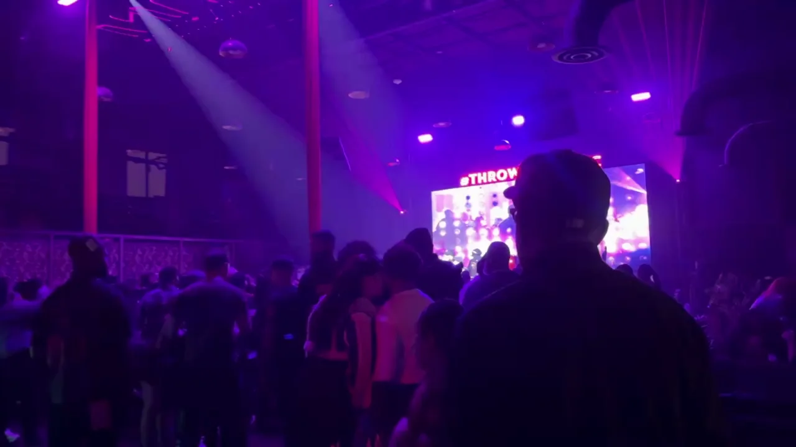
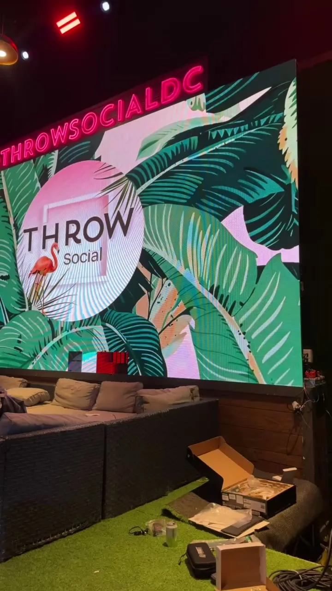
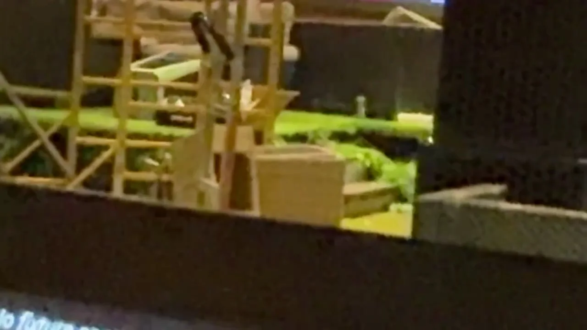